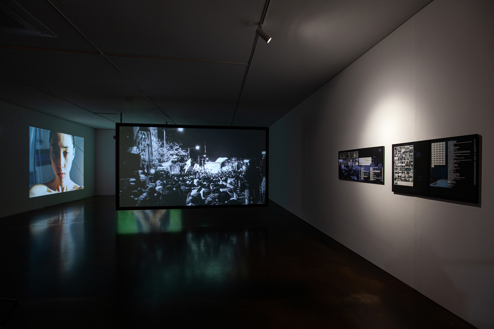
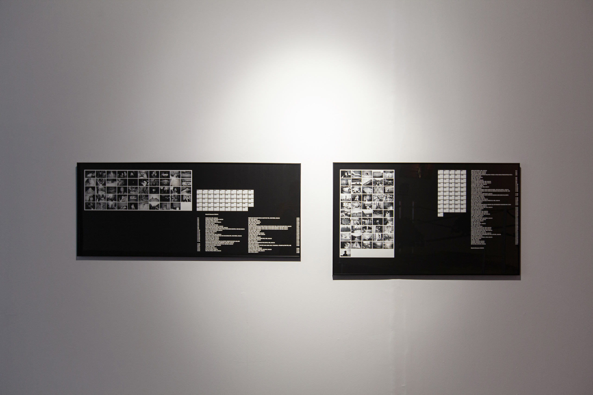
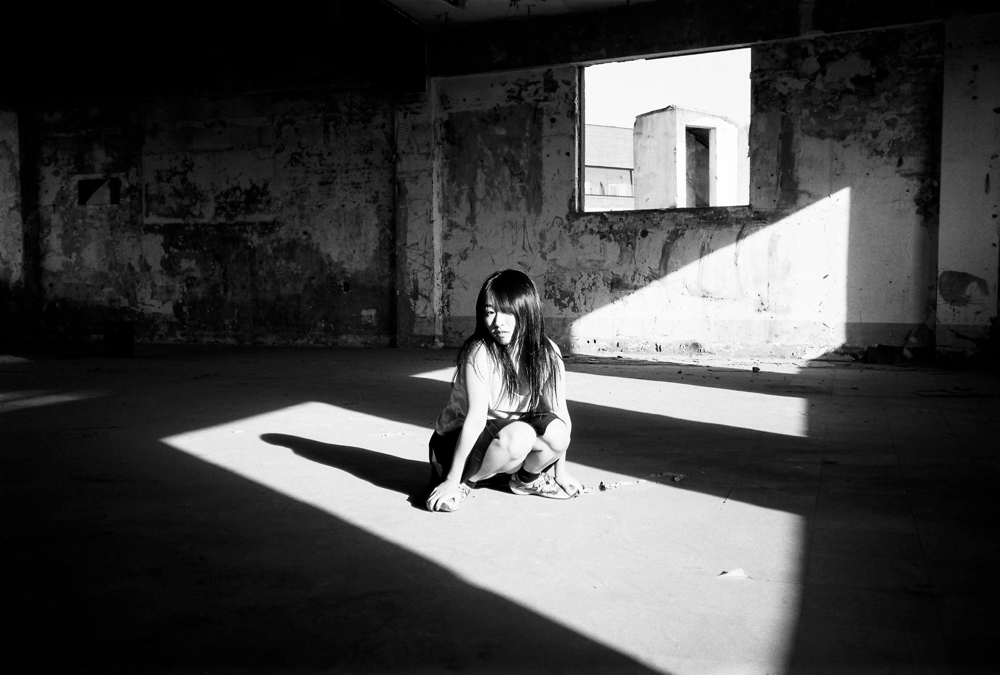

인터뷰: 홍지영
<신청 Link
Q2. 재훈: 작가님은 「유적지를 도는 여자들」에서 다음과 같이 말한 바 있습니다. “나는 몸의 유적지, 거기에 수많은 여자들의 무덤을 지어주고, 기념비를 올리고 사탑을 쌓고 있다. 돌을 깎아서 이름을 새기고 있다. 그 남아있는 자취들을 복원하는 것은 나의 일이다.”
유적지를 도는 일은 단순한 운동에 그치지 않습니다. 유적지를 돈다는 것은 궤적을 만드는 일, 안과 밖을 구분 짓는 일, 그럼으로써 중심을 가리키는 일입니다. 그중 누군가는 자신의 소원을 이루기 위해 쌓인 비석들 위로 적당한 돌멩이 하나를 올려놓기도, 그 돌멩이 때문에 지금껏 쌓인 비석들이 모두 무너져 내리기도 하죠.
<다크룸>과 <용주골 사진들>을 제외하고 이번 전시만 봤을 때, 본 전시에 놓인 사진들은 크게 정치적이지 않습니다. 공동의 자원인 힘을 어느 쪽에 사용하자는 의지는 없고 (혹은 그런 사진들은 모두 뺐고) 그저 이 유적지와 유적지를 도는 여자들을 잘 기록해서 보여주는 일에 관심이 있어보여요. 왜 이런 정치적 입장을 취하시는지 궁금합니다.
홍지영: 사진은 죽음과 기록의 매체니까, 사진가로서 제가 할 수 있는 정치적 실천은 어떤 죽음을 기록할 건지, 어떻게 기록할 건지 선택하는 일 그리고 어떤 죽음들은 왜 기록이 안 되는지에 대해서 질문하는 일입니다.
그 연장선상에서 <다크룸>은 우리가 이미 알고 있는 사회적 사건이 분명히 드러나는 작품이죠. 예를 들어 이태원 참사, 트랜스젠더 추모 시위, 용주골에서 이뤄졌던 강아지 장례식, 계엄 사태. 그리고 제 친구들이 삶을 살아가는 구체적인 모습들도 그것과 동일 선상에 올려 아주 중요한 일들처럼 다뤄요. <다크 인덱스>라는 도판 작업에서 언제 어디서 찍었는지 의도적으로 밝히고 있기도 하고요.

사진: 남서원. 제공: 아트선재센터. 2025
ⓒ Art Sonje Center

사진: 남서원. 제공: 아트선재센터. 2025
ⓒ Art Sonje Center
용주골 성매매 집결지에서 촬영 지원을 나가며 찍은 사진들 역시 용주골이란 장소가 강제철거, 강제로 죽임을 당하는 그 시간 동안 그곳에 오랫동안 살았던 건물이나 그곳의 거주자 그리고 그들의 흔적이 묻은 사물을 기록하는 입니다. <다크룸>과 <용주골 사진들>은 모두 이미 과하게 가시화되어 여러 정치적 견해가 얽혀있는 곳을 제 작은 카메라로 침투하고, 다르게 기록하는 데에 의미가 있다면,
<유적지를 도는 여자들>은 위 사진들과 다른 성격의 죽음을 다루고 있습니다. 아직 사건이 되지 못한 일들, 그 사건을 본 사람이 너무 적고 그 사건을 알아차릴 수 있는 사람도 너무 적어서 아직 사건이라고 부를 수도 없는 일들에 대한 이야기라고 생각합니다. 이와 같은 전-사건(前-事件)을 기록하고 보여주고 애도하는 이 작업이, 역설적으로, 제 사진으로 할 수 있는 제일 정치적인 일이기도 하다고 생각합니다.
재훈: 그 전-사건의 목격자가 너무 적다는 표현이 인상 깊네요. 그러니까 그 죽음의 대상은 분명한 게 아니라 추상적인 거죠? 예를 들어 그 추상적인 죽음에는 용주골 사람을 비롯한 다른 소수자나 퀴어의 죽음도 들어갈 수 있을 것 같아요.
홍지영: 그렇죠. 합의도 불가능할 정도로 안 보이는 것들을 일컬은 거예요. 말하다 보니 결국 <다크룸>, <용주골 사진들> 역시 전-사건 적인 측면이 있네요.
Q3. 재훈: 작가님의 모든 사진은 각기 다른 시기에 찍힌 사진임에도 불구하고 마치 하나의 연작처럼 다가옵니다. 이에 대해서는 크게 두 가지 이유가 떠올라요. 하나는 <물의 시간들> 연작 이후로 공고해진 흑백 사진이라는 선택. 둘째로는 피사체가 누구든, 그 사진들을 찍는 사진가의 몸, 즉 작가의 키와 리듬과 시선이 사진에 있는 그대로 반영되어 있다는 점입니다. 삼각대라는 기계적 고정 장치보다 자신의 몸을 지지대 삼아 찍는 사진을 좋아하고 그 미감을 계승 및 주장하고 싶어 하는 선택이 작가님의 사진에서 선연히 보이는데요. 그 이유를 여쭙습니다.
홍지영: 저 역시 제가 하는 모든 사진 작업이 (연도별, 시기별의 차이는 있지만) 하나의 커다란 덩어리라고 생각하고 있습니다. <물의 시간들>에는 삼각대를 쓴 사진이 훨씬 많죠. 디지털 사진으로 작업한 분량도 꽤 되고요. 그 이후부터는 삼각대와 디지털 카메라를 쓴 횟수가 현저히 줄어들어요. 셀프 포트레이트를 찍을 때도 대부분 손으로 들고 찍거나 어디에 잠깐 거치해 두는 식이죠.
지금 제 입장에서 <물의 시간들>에 포함된 사진들은 프레임이 매우 딱딱하다고 느껴요. 디지털 카메라를 삼각대로 고정해 놓고 촬영하니 사진이 대략 어떻게 나오는지 확인한 다음 그 직사각형 프레임 안으로 제 몸이 들어가요. 그런데 카메라를 들고 찍은 사진들은 제 몸과 카메라가 완전 이어져서 제 몸이 흔들릴 때 카메라의 직사각형 프레임도 계속 흔들거리거든요. 사진이 특정한 순간을 잡아 올리는 거라면,, 셔터 스피드 상으로 생각해 봤을 때도, 후자가 좀 더 네모 박스(프레임)가 옅어지는 느낌이 드는데 그게 저는 좋아요.
재훈: 그렇다면 본인의 사진사적 위치에 관해서는 어떻게 생각하세요? 이건 어떤 예술가가 되고 싶은지 물어보는 질문이기도 한데요. abs가 더미덤피이미지와 나눈 인터뷰를 보면 그런 이야기가 나오거든요. 사람들이 사진을 처음 좋아할 때 낸 골딘과 울프강 틸만스, 라이언 맥긴리 중에 선택을 하게 되는데 라이언 맥긴리 선택한 사람과는 안 놀게 된다고. 세 사람 모두 청춘 시절 자신의 젊은 친구들을 핸드 헬드로 찍어온 사람인데 활동가적인 무브먼트를 일으키는 전자의 사진가들과는 달리 상업적으로 쭉쭉 나간 라이언 맥긴리는 아예 다른 예술가잖아요.
지영 작가님의 경우 작가님의 활동을 미술계에서 계속 회자하긴 하지만 작가님이 신자유주의적 미술가의 커리어를 밟아나가고 있다 생각하진 않거든요. 오히려 정통 사진가의 포지션을 지키고 있는 게 보는 입장에서 상당히 흥미로워서 이에 대한 견해가 있다면 알려주시면 좋겠어요.
홍지영: 어떤 사람처럼 되고 싶다는 생각은 아예 없어요. 다만 지금 할 수 있는 결정들을 계속하는 것 같은데 그 결정을 할 때 제게 있어 중요한 기준은 땅에 발 딛고서 작업을 하는 감각을 잃지 않으려고 하는 것입니다. 사진가로 산다는 건 무조건 찍고자 하는 장소에 방문을 해서 어떤 사람들을 만나야 되는 일, 그리고 그 장소에 대해 이해해야 되는 일이라고 느끼는데, 이 점이 저 스스로를 미술가가 아니라고 생각하게 합니다. 땅에 발 닫고 있는 감각을 떠나서 어떤 세계 안에만 머무르고 싶지는 않다는 생각을 늘 해요. 저는 그게 늘 무섭기도 하고요. 하여튼 이 점이 미술가와 사진가의 제일 다른 점이라고 생각합니다. 미술가는 그 땅을 직접 밟지 않아도 어떤 세계를 만들어낼 수 있는 것 같아 보이거든요.
재훈: 그런 유형의 사람들이 있죠.
홍지영: 맞아요. 그것 외에는... 삶을 사는 것. 이게 가장 중요합니다.
Q4. 재훈: 본 전시에 출품된 <타고난 희생자> 연작에는 작가님의 개인적 삶이 담긴 연작 <다크 룸> 속 사진이 일부 포함되어 있습니다. 유적지(신화적 공간)와 개인의 삶(실재계) 그리고 사회적 삶(상징계)라는 세 가지 집합은 벤다이어그램처럼 서로 되풀이되고 겹치는 관계쌍 속에 있죠. 예를 들어 <타고난 희생자>는 개인의 삶과 유적지에 겹친다고 볼 수 있을 듯한데요.
작가님이 봤을 때 작가님의 사진 중에는 저 세 벤다이어그램에 모두 속하는 사진이 있나요? 자신이 찍은 사진도 좋고 다른 작가가 찍은 사진도 좋습니다.
홍지영: 어떤 방식의 분류인지 이해되고 저도 임의적으로는 그렇게 구분하고 있긴 합니다. 근데 그 분류가 엄청 유효하지는 않은 것 같아요. 제가 좋아하는 사진가로는 지금 당장 이시우치 미야코, 마사히사 후카세, 필리스 크리스토퍼 정도가 떠오르는데요. 이 세 사람 모두 다 자기 삶을 살면서 길거리를 돌아다니고 그 시간만큼 또 암실에서 혼자 시간을 보냈을 거예요. 이 세 가지가 모두 한 사람이 행하는 일이라고 생각하는데요.
재훈님의 분류를 빌려와 표현하자면, 자기의 삶을 사는 일은 ‘개인의 삶’인 거고 그리고 길거리를 돌아다니는 일은 ‘사회적 삶’을 사는 일, 그리고 그만큼 암실 안에서 그 사진을 바라보면서 해석하는 시간을 갖고 어떤 식으로 엮어내는 일은 어떤 ‘신화적 공간’ 자기만의 세계를 만드는 일이잖아요. 그래서 그 세 가지를 모두 하면서 살았던 사진가들의 사진이 좋다고 느껴요.
제 사진으로도 그 세 가지를 임의로 나눌 수는 있겠죠. 다만 제가 그 태도 자체를 지향하기 때문에 모든 사진에 그 요소들이 섞여 있고, 시기마다도 바뀌어요. 그리고 결국 사진은 나 혼자 보는 게 아니라 다른 사람들이 보는 건데 그럴 때는 또 완전히 다른 감상이 만들어지죠.
재훈: 그러면 작가님께서 제일 좋아하는 사진은 뭔가요?
홍지영: 제가 미래에 찍을 사진이요.
재훈: ...... 그럼 잠깐 다른 길로 새어볼게요. 아까 좋아한다고 언급하셨던 마사히사 후카세의 삶에 대해서는 어떻게 생각하세요. 그 사람이 첫 개인전 때 자기 아내가 유산한 것을 찍어서 전시하고 그 후 첫 번째 아내가 도망갔잖아요. 그리고 두 번째 아내도 굉장히 많이 찍었다가 그녀가 후카세는 사진기로만 자신을 보는 것 같다며 또 이혼했고요. 그러다가
홍지영: 술집에서 굴러떨어졌죠. (웃음)
재훈: 그렇게 20년간 병원에서 식물인간처럼 살다가 죽었잖아요. 물론 나는 그 사람 사진 중에서도 너무 사랑스럽고 예쁜 사진도 있다고 생각하는데 삶은 진짜 되게 별로라는 생각을 했어요.
홍지영: 저는 사실 아라키 노부요시 사진도 너무 좋아하고 후카세의 사진도 너무 좋아하는데 그래도 둘은 좀 다르다고 생각해요. 사진으로 다른 사람을 찍는 일을 두고 어떤 사람들은 저 남자 사진가들이 완전 착취했다고 생각할 수도 있잖아요. 근데 그 일은 그 당시에 그 두 사람이 서로를 너무 사랑해서 가능했던 내어줌이기도 하단 말이죠. 후카세의 아내가 나중에는 “나랑 같이 있는데도 그는 렌즈를 통해서만 나를 바라봤다. 내 눈을 보고 소통한 적이 없었다.” 이런 식으로까지 말을 하는데요. 그 말이 뭔 말인지 너무 이해되는데도 사진 없인 그 사람이 없었을 테니까, 그 당시에는 얼마나 싫고 짜증이 났든 그 사람을 사랑했던 거죠.
그래서 아라키가 찍었던 수많은 사람 중에 그 사람이 성폭행한 사람도 있고, 몰래 찍은 사람도 있고, 뭐 끔찍한 방식이었겠지만 그 사진 중에 몇몇 사진들은 분명 그런 방식이 아니었을 거라고 믿어요. 모든 관계가 다 그렇지 않았을 거라고 믿고, 그렇게 상처를 주고받는 게 나쁜 일만은 아니라고 생각해요.
Q5. 재훈: <타고난 희생자>와 <유적지>로 이루어진 세계관 중 작가님은 스스로 어떤 역할을 맡고 있다 생각하시는지 궁금합니다. 3번 질문이 정치적 혹은 사회적 입장에 관한 질문이라면 6번은 내부적 입장에 관한 질문입니다. 다른 식으로 여쭤본다면, <타고난 희생자>에 작가님의 셀프 포트레이트가 다른 인물에 비해 왜 그렇게 많이 포함되어야 했었는지?
홍지영: 먼저 셀프 포트레이트가 왜 그렇게 많이 포함됐는지에 대해서 답을 할게요. 제가 사진을 찍을 때 몸을 즐기는 방식이 있어요. 그 방식을 이번에는 타인의 몸을 통해서 하고 싶지 않았던 것 같아요. 희생자에 대해 말하기 위해서 다른 사람들의 몸을 적극적으로 가져와서 쓰는 일이 윤리적인 선택인지에 대한 고민도 있고요.
그리고 실용적인 측면도 있어요. 사진으로 몸을 다 계속 죽이는 방식으로, 축내버리고 낭비하는 방식으로 몸을 쓰는 일을 제가 엄청 즐기는 일입니다. 이 일은 제 몸으로 할 때가 가장 정확하게 가능해요. 그리고 재미가 있죠. 이 행위를 이번에는 꼭 즐기고 싶었어요.

ⓒ 홍지영
재훈: <한다> 연작을 <타고난 희생자>에 포함한 선택을 보면, 작가님께서 타인의 몸을 가져와 쓰는 데 주저함을 느낀다는 점이 그렇게 신빙성 있게 들리지는 않는데요? 솔직히 타인의 몸을 가져와 쓸 때 즐겁지 않나요?
홍지영: 즐기는 마음도 있죠. 다만 <한다>는 좀 다르다고 느껴요. 그 연작은 몸이라는 덩어리가 한 곳에 몰려 있을 때에 그 몸이 주는 공포감을 찍은 거죠. 제가 그 사람들 한 명 한 명의 삶을 파고들어 가서 그 사람의 개인적인 특성들을 가져온 느낌은 아니에요. 저로서는 좀 다릅니다.
재훈: 사진에서 사람의 몸을 촬영할 때 닳는 게 이미지보다는 삶의 차원이군요. 걸쳐져 있는 거겠지만요.
홍지영: 그렇죠.
재훈: 결과적으로는 그 선택으로 인해 <타고난 희생자들> 속 자기 몸의 비중이 되게 높아졌잖아요. 그랬을 때 그 결과가 어떻게 보이나요?
홍지영: 제 작업에서 제 몸을 촬영하고 저의 이야기를 계속하는 선택에 대한 논리적인 방어 및 설득은 제게 있어 꽤 오래된 문제인데요. 그전에는 어떤 식으로든 설명을 해야 했기 때문에 번역된 말, 현장에서 통용되는 단어로 제 작업을 생각했을 때가 있었어요. 근데 이번에는 그러고 싶지 않았고, 그건 정확하지도 않아요. 그러면서 셀프 포트레이트를 많이 넣자는 생각을 했어요.
이건 아직 잘 정리가 안 된 부분인데요. 제게는 그 셀프 포트레이트들에 담긴 사람들이 다 나라고 느껴지지가 않아요. <물의 시간들>을 작업했을 때는 사진 속 제 몸이 정말 나라고 여기고, 내 이야기라고 생각했거든요. 서로 너무 달라붙어 있어서 이 작품을 공격하거나 말을 덧붙이면 내가 훼손되는 느낌이 들 정도로요. 그런데 어느 시점 이후부터는 셀프 포트레이트가 전혀 내 몸도 나도 아닌 느낌이 들었어요. 나이대도 너무 다양한 다른 사람들 같고, 내가 했지만 기억 안 나는 일이라는 생각도 들고요.
재훈: 저도 작업자로서 비슷한 걸 느껴요. 저는 일종의 그림자 분신술이라고 생각하고 있습니다. 근데 그러고 보니 이번 전시에는 전시 소개글이나 작품 캡션과 같은 기본적인 정보도 주어지지 않았잖아요. 만약 작가님께서는 이 전시를 소개한다고 하면 어떻게 소개하실 건가요?
홍지영: 어디서 소개하느냐에 따라서 다르지 않을까요?
재훈: 여기서 소개한다면?
홍지영: 정말 단순하게 말하자면, 유적지를 만들고 싶었습니다.
재훈: 알겠습니다.
Q6. 재훈: 작가에게는 누구나 작업으로써 풀고자 하는 원형적 경험이 있습니다. 그 경험을 어떻게 질릴 만큼 질리지 않게 반복하는 것이 작가의 일이라 저는 생각합니다. 그런 점에서 작가님께서 《모텔전》 직후에 SNS에 게시했던 말 “철거를 마무리하고 택시를 타고 집에 오는데 갑자기 찢어지는 듯한 고통과 함께 눈물이 났습니다. 영영 무언가를 잃어버렸고 이건 절대 회복 가능한 것이 아니라는걸, 그걸 가지고 앞으로도 살아 나가야 한다는 게 캄캄해요. (...) 이건 죽은 사람들을 위한 그리고 저의 끔찍한 사고에 대한 최대의 제사였던 것 같네요.”이 떠오르는데요.
저는 이 글을 읽고 《모텔전》이 작가님 자신에게 일어났던 끔찍한 개인사에 대한 승화이자 제의라고 느껴졌습니다. 같은 맥락에서 이번 개인전은 그 경험에 대한 폭로 내지는 시위로 다가왔어요. 모텔 방 안에서 퍼포머였던 작가님의 손을 잡고 방 안을 돌던 기억이 윈드밀에서 비채님의 손을 잡고 도는 경험과 이어졌듯이요. 그런 점에서 작가님과 비채님의 손을 잡고 공간을 도는 일 역시 일종의 원형적 경험이라고 느꼈어요. 문득 《모텔전》에서 오늘 퍼포먼스는 끝났다고 단호하게 말하던 비채님의 모습이 떠오르는데, <유적지를 도는 여자들> 안에서 비채님은 어떤 존재인가요?
홍지영: 비채는 첫 얼굴, 제가 유적지에 쏟아졌을 때 처음으로 본 얼굴이었습니다. 비채는 유적지에 원래 살던 사람이에요.
재훈: 비채님이 원래 거기 살고 있었다고 알게 된 시점이나 계기를 말씀해 주실 수 있을까요?
홍지영: 제가 사진을 찍기 시작한 이래로 누구랑 진짜로 만난 경험이 비채가 처음이었어요. 그러고 나서 비채가 내 사진에 찍혔는데 그때 비채가 너무 익숙하게 거기 원래 있었던 사람인 것처럼 나를 맞아줬다고 생각합니다. 개인적으로 너무 사랑하는 사람인 비채와 쌓은 시간과 예술가인 비채가 작업과 삶을 대하는 태도가 결부되어 그렇게 느끼게 된 것 같아요.
Q7. 재훈: 저는 작가님의 <타고난 희생자> 연작 중 누드 사진 한 장을 가져갔어요. 섹슈얼하게 보이지 않는 몸과 마냥 착해보이지 않는 표정을 보고 저 몸을 오래 기억해야겠다. 자아다. 저 몸뚱아리에는 나와 같은 자아가 있다. 내 생김새를 보고 기분과 분위기를 살피고 위험도를 측정하는 어느 여자 한 명이 내 눈 앞에 있다. 저 여자가 수없이 많은, 여자다. 이렇게 기도하면서요. 저는 전시를 보며 “네가 뭔데 아직 짓지 않은 나의 죄를 보여줘?”와 “죄송합니다 죄송합니다 죄송합니다 죄송합니다 죄송합니다”를 번갈아 속삭였는데요. 전시를 보는 남자들이 무엇을 보고 담아갔으면 했는지 궁금합니다.
홍지영: 우선 저는 재훈님께서 가져간 사진이 무엇인지 기억하는데요. 그 사진이 섹시하게 보이지 않는 몸이라고 생각한 게 신기하네요. 사진은 정말 누가 가져가느냐에 따라서 다르게 느껴지는 것 같아요.
저는 남자 관객들이 어떻게 보고 담아갔으면 좋겠다고 생각한 적은 없어요. 그저 전시 제목이 ‘유적지를 도는 여자들’이고 전시장이 ‘유적지’라면, 그곳에 도착해 전시를 보기 위해 전시장을 도는 사람들 모두 ‘여자들’이 되는 거죠. 그래서 전시에 들어온 관객들이 다 여자라고 생각했던 것 같아요.
다만 이럴 때는 있었습니다. 전시장을 아무리 돌아도 ‘이 관객은 여자가 덜 된 채로 나랑 돌고 있다’ 이런 느낌은 받은 적이 있어요.
재훈: 그런 건 어떤 제스처에서 느낄 수 있었나요?
홍지영: 언제 느꼈다고 설명하기는 어려워요. 다만 공포에 휩싸인 사람들, 여자를 너무 무서워하거나 혹은 어떤 말을 할지 모르겠다고 말하는 사람들을 보며 되게 의외라고 생각했어요.
재훈: 왜요? ‘당연히 알고 있어야지?’ 이런 느낌인가?
홍지영: 아니요. ‘왜 여자가 못 됐지?’라는 느낌이에요.
재훈: 세상은 이미 다 남자이고 일자리나 길거리, 집안일 등의 성역할이 남자인 걸 표준으로 가정한 채로 세상이 굴러가고 있는데 이 전시장에서만큼은 뒤집은 거잖아요. 이 간단한 설정이 그들에게 못 받아들여진 것에 대한 의문인가요?
홍지영: 그런 거 같기도 하고요. 최근에 우지안님과 함께 레이빙이라는 책에 관해 이야기를 나누다가 공감가는 지점이 있었어요. 레이버들이 음악 안에 들어가면 비트에 박혀야 되는데 어떤 사람들은 비트에 못 박히고 자기가 박으려고 한다는 거예요. 그 공간에 녹아들지 못하고 다른 여자한테 추근덕거리다던가 이상한 시선을 막 보낸다든가 하는 거죠. 박지 않고 박히면, 그 흐름에 몸을 맡기기만 하면 그 음악과 공간 그 사람들과 함께 다 즐길 수 있는데 그걸 안 한다는 말이 갑자기 떠오르네요.
Q8. 재훈: 사진을 가지고 간 관객들이 집으로 가는 길은 마치 유적지를 도는 일과 같았을 겁니다. 전시장에서는 작가가 자신의 사건과 전시라는 사건에 관해 계속해서 쓰고, 들어오는 관객에게 희생자의 증거를 삐라처럼 뿌렸으니 세상에는 총 수십 개의 유적지가 새로 생겨났으려나요. 작가님께서는 “그럼에도 아무것도 비워지지 않”았다고 말씀하셨죠. 전시 감상에 무료한 시점이 찾아 올 때마다 작가님께서 전시장 벽을 발로 차 긴장감을 조이셨던 기억이 나는데요. 전시장에서 직접 앉아 글을 쓰고 계셨던 이유가 궁금합니다.
홍지영: 오늘 꿈을 하나 꿨는데요. 제가 《유적지를 도는 여자들》을 12일 동안 처음부터 다시 해야되었던 내용이었습니다. 전시장 안에서 저는 전시 운영 시간 동안 계속 무언가를 먹어야 하는 설정의 퍼포먼스를 하고 있었어요. 먹다가 못 먹겠으면 토하는 과정을 12일 동안 반복하다가 12일이 끝나고 나니 몸이 완전 바뀌어 있었죠. 제 몸이 아닌 다른 몸으로요.
잠깐 다른 이야기로 새어버렸네요. 제가 윈드밀이란 공간을 유적지란 장소로 바꿀 때 가장 유념했던 것은 공간의 진공감입니다. 전시장에서 사진을 찍지 못하게 했던 설정도 관객이 사건이나 유적지에 대해 갖은 느낌을 바깥으로 빠져나가지 않도록 만들기 위해서였어요. 전시장이 정리되지 않은 채 축적되었던 그 느낌을 12일 동안 온전히 받아 즐기고 싶기도 했죠. 그 즐기는 방식의 일환으로 그 안에서 일어나고 있는 일들을 온몸으로 받아서 쓰는 일을 하고 싶었습니다.
퍼포먼스에 대해 말해보자면, 비채는 눈을 감은 채로 정지해 있기 때문에 눈이 자기 안을 향해 수직으로 뜨여져 있었고요. 주현은 계속 전시장을 걸어 다니므로 눈이 바깥으로 수평적으로 뻗어 있었습니다. 그리고 관람객에 따라 전시장의 분위기가 매일 매일 크게 달랐습니다. 12일 내내 관람객과 주현, 비채가 만들어 내는 긴장감 안에 저도 함께 놓이며 그 느낌을 받아내고 기록하는 일을 하고 싶었어요.
재훈: 제가 방문했을 요일에는 주현님은 없었는데, 주연님은 전시장에서 어떤 일을 하고 계셨나요?
홍지영: 주현은 계속 전시장을 돌고 있었어요. 그 구두 소리와 몸짓으로 전시장에 리듬이 생기고 바람이 불고 시간의 흐름을 만들어냈어요.
Q9. 재훈: 「유적지」의 도입부는 다음과 같습니다. ‘여기는 유적지다. 내가 언제 이곳에 도착했는지 기억이 나진 않지만 이곳에 먼저 도착해 있던 이들이 말하길 그건 내가 태어났을 때 였다고 한다.’ 여기서 ‘유적지’란 여자라는 (역사적) 운명이, 갓 태어난 여자 아이에게 할례처럼 표시하듯, 수난의 시작을 의미하는 증표와도 같고, 모종의 신화적 공간과도 같다는 사실을 알려줍니다. 모든 여자는 유적지에서 태어나니까요. 자연인으로서, 작가님께서 그 운명을 깨닫게 된 계기나 시기는 언제인가요? 여자라는 정체성과 자신의 셀프 포트레이트를 어떻게 연결 지어 생각하시는지도 궁금합니다.
홍지영: 정말 어렵고 다방면으로 할 얘기가 많아서 어떻게 말해야 될지 잘 모르겠네요. (웃음) 음... 여자란 고통을 겪은 사람에 가까운 것 같아요. 그런 면에서 모두가 여자죠. 제가 처음 작업할 때부터 몸을 사용했던 이유는 제 몸이 너무 통제 불가능했기 때문이에요. 그걸 이해하고 싶어서 몸을 계속 썼어요. 여러 가지 병명, 제 성폭행 경험 뭐 그런 것들에서 이유를 찾았던 때도 있었는데, 결국은 그게 아니라는 걸 깨달았어요. 결론적으로는, 타고난 희생자도 있다는 것입니다. 성폭행을 겪을 만한 사람이 있다.
조울증이나 이인증, 퀴어로서의 정체성, 세상 속 여자로서의 위치나 성폭행 혹은 트라우마를 다루는 수만 가지 이론들보다 그냥 타고난 희생자들이 있다는 표현이, 제 몸을 이해하는데 있어서 저에게는 훨씬 유용했어요. 결국 제가 여자라고 생각하는 감각은 고통을 겪었는데 그 고통을 언어로 표현할 수 없는, 아무리 말을 해도 번역한 말로밖에 전달이 안 되는 그런 종류의 고통을 겪은 사람들을 여자라고 생각하는 것 같습니다.
이 여자라는 정체성은 셀프 포트레이트와 매우 연결돼 있는데요. 저는 제 몸 전체가 사진기라고 느끼기 때문에 제 몸을 통과해서 촬영된 사진이 그 고통의 감각을 좀 더 정확하게 표현할 수 있는 길이라고 느껴왔어요. 근데 이 이미지가 다른 사람들한테 보일 때는 또 완전 다른 이야기가 되겠죠. 여자처럼 보이는 사람의 몸이 담긴 사진이 유통되는 방식이나 그 이미지에 달라붙은 인식들과 역사들이 끼어들어온다면 아예 새로운 이야기를 해야할 것 같은데 이 점에 대해 이야기하기란 너무 길 듯합니다.
재훈: 그럼 방금 작가님께서 말한 여자에 관한 정의를 알게 된 계기나 시기가 기억나시나요?
홍지영: <물의 시간들>이 지나고 나서입니다.
재훈: <물의 시간들>과 그 시기 중 어느 것이 중요했던 건가요?
홍지영: 제가 생각하기에 <물의 시간들>은 그래도 번역을 해서 말하려고 굉장히 노력한 결과물이에요. 그 시기에는 이걸 이해하고 함께 이야기 나눌 수 있는 사람들을 제발 찾고 싶었거든요. 그런데 ‘물의 시간들’이 나가고 난 후 이런 방식으로는 안 된다는 사실을 깨달았죠. 결론적으로는 번역된 말로 나를 설명할 필요가 없고, 그건 정확하지 않다고 느꼈어요. 그 시기에 글을 쓰다가 적은 글이 유적지를 도는 여자들이라는 시 인데요. 그 시 속의 유적지라는 장소는 제게 새로운 세계를 가져다주었습니다.
Q10. 재훈: 제가 어제부로 다시 입원을 하게 되었어요. 한번 입원했던 병동이었는데 다른 층의 병실을 쓰게 되어 남자 화장실 앞에서 샤워장이 어디인지 멀뚱히 헤매고 있었습니다. 그러자 노년의 미화원분께서 이곳에는 샤워장이 없으니 5층 샤워장을 사용하면 된다고 알려주셨습니다. 감사 인사를 드리려 고개를 숙이자 그 분 왼쪽 가슴에 달려 있는 ‘천사’라는 단어가 눈에 들어왔어요.
개인이나 우프로서, 다음 프로젝트에 대해 구상하고 계신 바가 있다면 예고 부탁드립니다.
홍지영: 개인적으로는 ‘유적지를 도는 여자들’이라는 이름으로 사진책을 만들고 싶은데 이건 천천히 할 생각이고요. 우프로는 3월부터 6월 사이에 열릴 전시를 기획하고 있습니다.
이번 전시에서 중점이 되는 일 또한 장소를 만드는 일일 거예요. 그러니까 결국 우리가 정신병자가 되는 가장 큰 이유는 아무 땅도 내 땅이 아니고 어떤 곳에도 내 언어가 없기 때문이잖아요. 빌려온 말, 빌린 집 같은 것들에 의지해야 하고, 그러다 보면 계속 길을 잃게 되는 것 같아요. 어디에 있는지 모르게 되니까요.
이번 개인전을 통해 잠시 우리가 밟고 설 수 있는 곳을 만들었던 것처럼 그런 곳을 만드는 일을 하고 싶어요. 그렇다고 해서 건물을 세우거나 어떤 땅을 내 소유로 바꿔서 거기를 막 사들이는 방식은 아닐 것 같아요. 다른 방식으로 장소를 만드는 일을 계속 실험해 보고 싶습니다. 이 일을 우프 전시회에서 다시 해보려고 합니다.